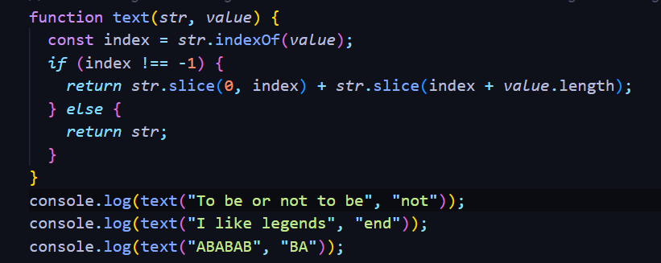
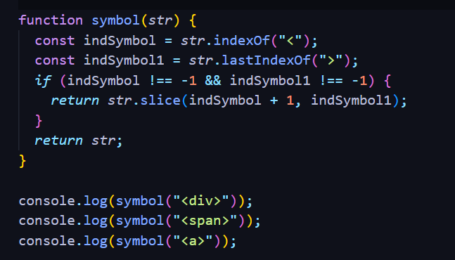
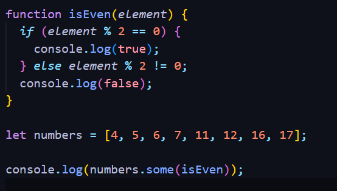

1. Berilgan stiring ichidan olib tashlanishi kerak bo’lgan stringni birinchi uchraganini olib tashlang

2. Birinchi va so’ngi burchali qavslarni olib tashlang.

3. Funksiyaga berilgan son tub bo’lsa true, aks holda false qaytarsin:
